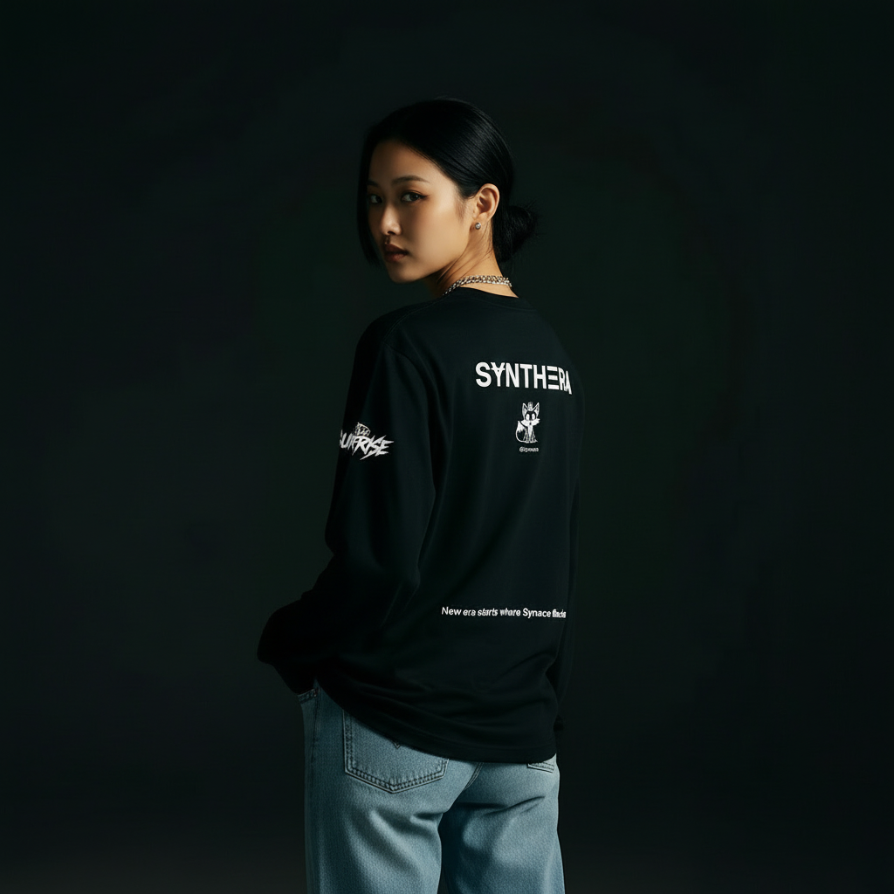
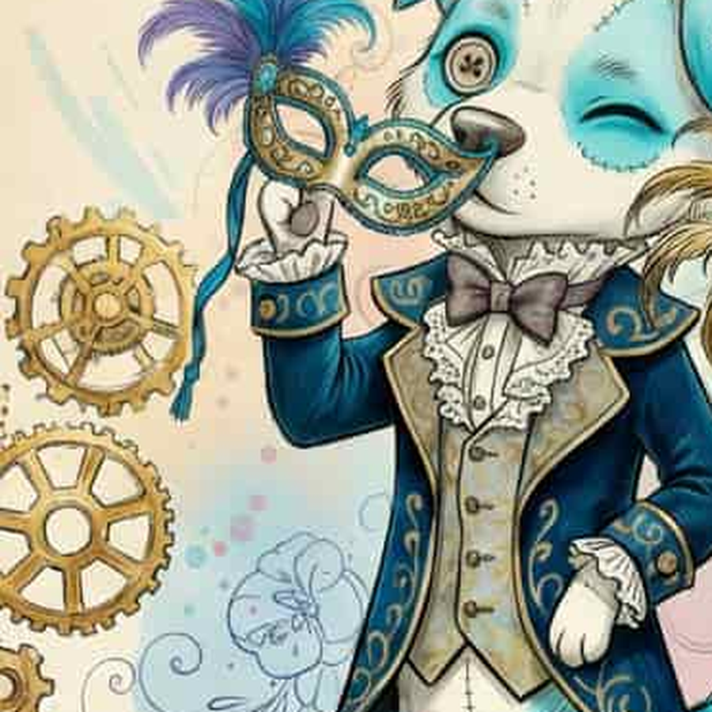
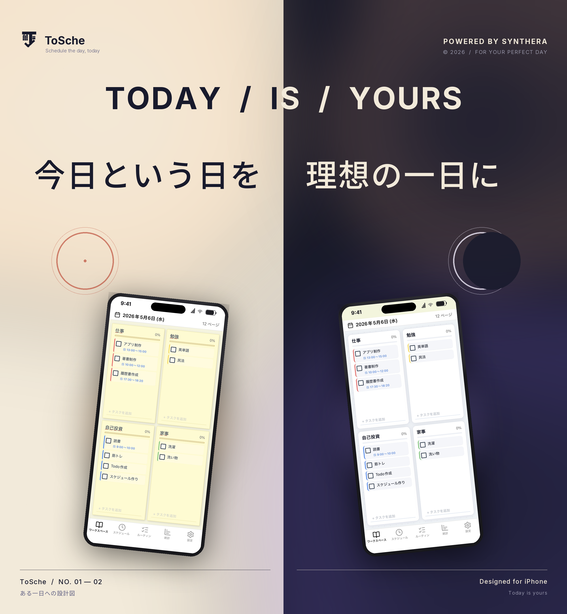
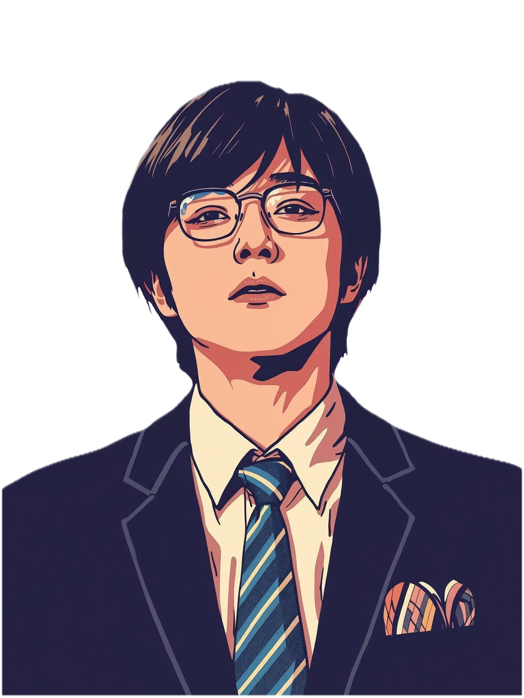

Tech · iOS Utility
ToSche
Task · Schedule · Goal — All in One
タスク管理、スケジュール管理、目標管理を複合化したiOSユーティリティアプリ。世の中の人がより目標を持ちやすく、生きやすくするためのサービス。

Task · Schedule · Goal — All in One
タスク管理、スケジュール管理、目標管理を複合化したiOSユーティリティアプリ。世の中の人がより目標を持ちやすく、生きやすくするためのサービス。

仮面診断 / Mask Type Personalize App
学校・職場など「人前での自分（仮面）」のふるまいを 4軸×16タイプ に分類する外面性格診断ツール。全40問・約5分・無料。masktype.synthera.jp で本番稼働中。
View detail
AI-Powered Operations Support
AIの進展に伴い、世界の効率化を図るためのオペレーション事業向けDX支援SaaS。属人化した業務を、テクノロジーで再構築する。

A podcast on goals, growth, and the city.
目標を達成するまでの道筋を可視化し、発信していくポッドキャスト番組。挑戦している人の声と思考を、街に響かせる。
